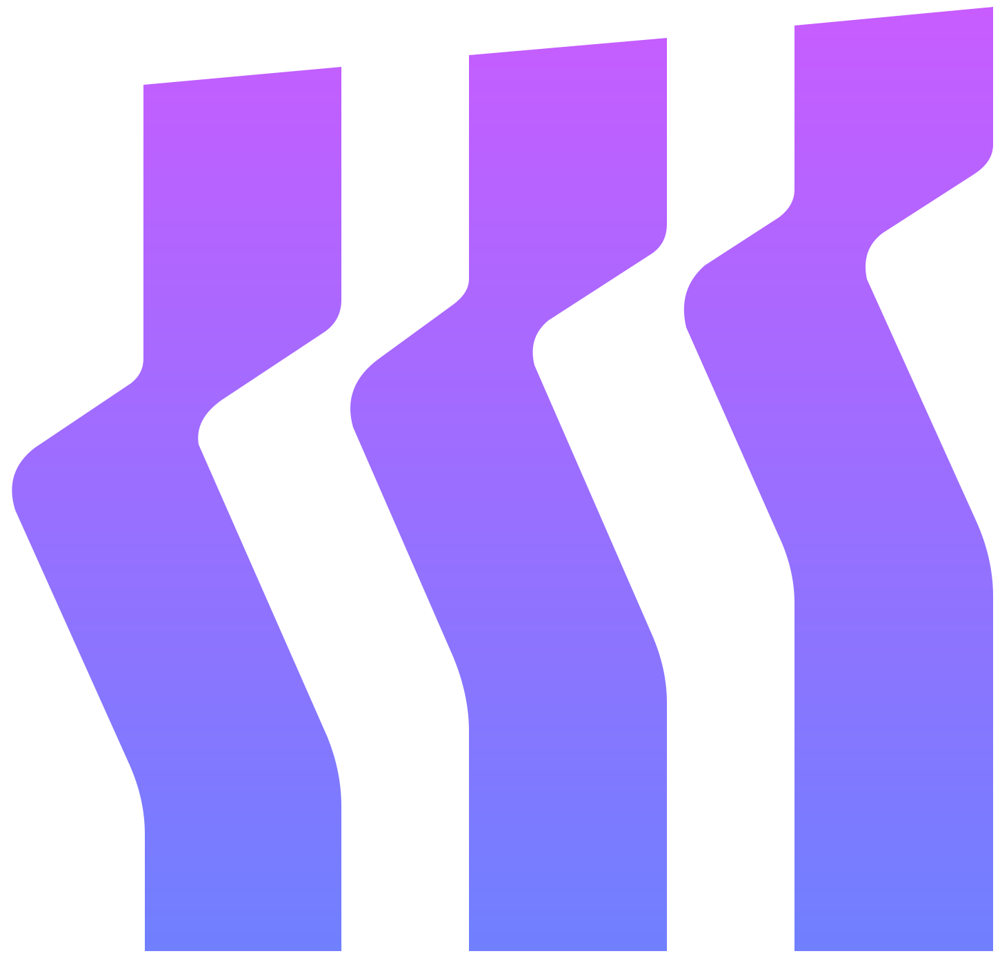
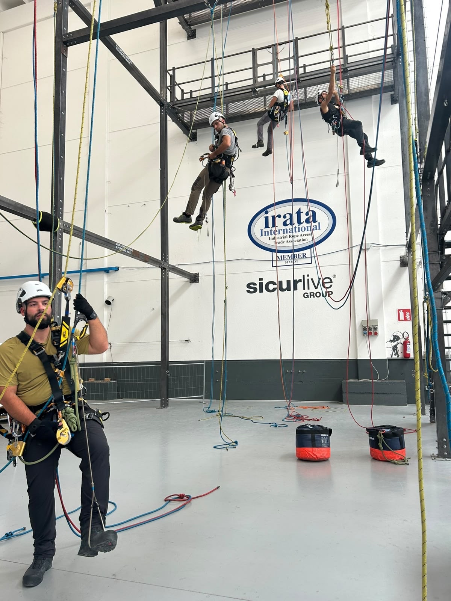

Healthcare assistant (OSS)
Care in facilities, home care and urgent shift cover1,010-hour qualification, 92/100. Cooperatives, residential facilities, communities and families.

Mattia Crapanzano 02 / 02 · In rescue01 Rope · Rescue · Care
IRATA Level 1 rope access technician, ITRA Level 2 rope rescue technician, with the Italian Module A. I am a Red Cross ambulance first responder, volunteer firefighter and healthcare assistant (OSS). At height, when something goes wrong, what matters is who knows how to act: I bring that preparation to the team.

IRATA L1 Legnago · Italy ALT 97.2 m 2 ropes · 2 anchors1,010-hour qualification, 92/100. Cooperatives, residential facilities, communities and families.
Emergency response, medical transport and event cover, at night and on holidays too.
Volunteer service in the national fire brigade.
Certified rope access technician, qualified to work at height in Italy.
Rope Rescue Technician, International Technical Rescue Association: the step to bring rescue to height.
Before acting I look: the situation, the people, the risks.
Under pressure calm is what counts. I learned to keep it.
With no margin for error, everyone does their part and trusts the other.
Pick the one you need and download it as a PDF.
At height, in a care home or in an emergency: tell me where, when and what you need. I answer the same day.